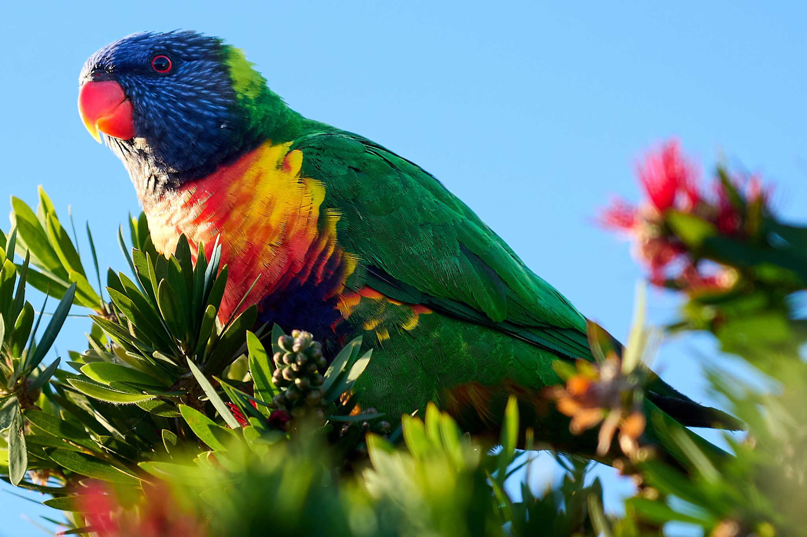
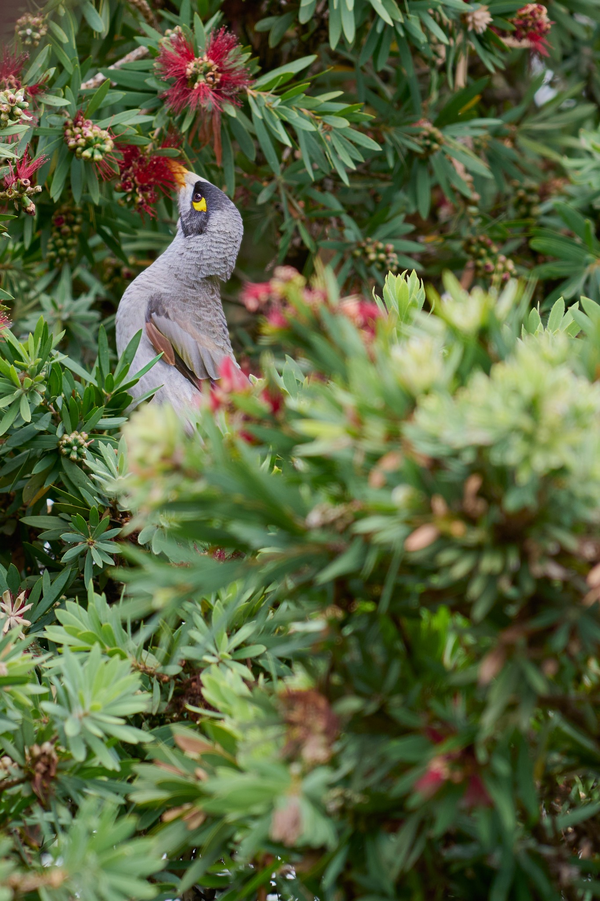

Observing
Seeing whats authentic and real and trying to capture 'what I see'.
Behind The Lens
Misztal Images began as an idea of sharing and showing experiences I have captured through film and digital photography. Also getting my photos and ideas off the hard drive!

A Personal Journey
This site contains images of places I have travelled, lived and experienced.
I been have fascinated with photography from an early age, with developing black and white colour film in my teens and early 20's to exploring how photography works, how a story can be captured and how art can be expressed through film.
My aim to deliver an authentic 'as it is' image.
What Matters
Seeing whats authentic and real and trying to capture 'what I see'.
The evershifting and changing environment we live in is an inspiration.
Every photograph should feel like a fleeting moment in time that has been captured and appreciated.
Inspired By Experience
Inspiration comes from the context of where the image exists and what other life exists in within those ordinary moments.
The aim is simple: create photography that feels authentic and real.
